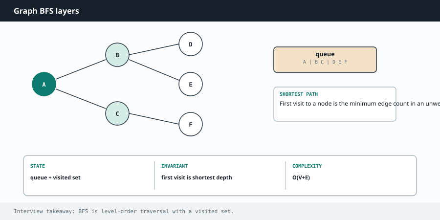

Competitive Programming
Chapter 12
Graphs, BFS, DFS

A graph is nodes connected by edges. Roads between cities, friends on a network, rooms with doors between them. Trees are just a special kind of graph. Two traversals do most of the work: breadth first (explore in rings outward) and depth first (dive down one path). Master these two and a whole category of problems opens up.
A B BFS from A:
A, B, C, D, E
E DFS from A:
A, B, D, C, E
(exact order depends C D on neighbor order) BFS spreads out level by level. DFS commits to one path before backing up.
How to store a graph
The usual representation is an adjacency list: a map from each node to the list of its neighbors. It is compact and fast to iterate. For grid problems (mazes, islands), the grid itself is the graph, and a cell's neighbors are the cells up, down, left, and right.
R E A C H F O R G R A P H T R A V E R S A L W H E N Y O U S E E
"Number of islands / connected groups", "can you reach B from A", "shortest path in an unweighted grid or graph" (BFS), "does a cycle exist", "course prerequisites / build order" (topological sort). Grids of land and water, rooms and keys, and word ladders are all graphs in disguise.
BFS: shortest steps in an unweighted graph
BFS uses a queue and visits nodes in rings: all nodes one step away, then all two steps away, and so on. Because it reaches nodes in order of distance, the first time it touches the target is guaranteed to be the shortest path. Always mark nodes as visited when you enqueue them, so you never add the same node twice.
from collections import deque
def bfs(graph, start):
visited = {start}
queue = deque([start])
order = []
while queue:
node = queue.popleft()
order.append(node)
for neighbor in graph[node]:
if neighbor not in visited:
visited.add(neighbor) # mark on enqueue, not on dequeue
queue.append(neighbor)
return order
List<Integer> bfs(Map<Integer, List<Integer>> graph, int start) {
Set<Integer> visited = new HashSet<>();
Queue<Integer> queue = new LinkedList<>();
List<Integer> order = new ArrayList<>();
visited.add(start);
queue.offer(start);
while (!queue.isEmpty()) {
int node = queue.poll();
order.add(node);
for (int neighbor : graph.getOrDefault(node, List.of())) {
if (!visited.contains(neighbor)) {
visited.add(neighbor); // mark on enqueue
queue.offer(neighbor);
}
}
}
return order;
}
DFS: explore everything reachable
DFS dives down one branch as far as it goes, then backtracks. It can be written with recursion (simplest) or with an explicit stack. Use it to count connected components, check reachability, or explore all paths.
def dfs(graph, node, visited):
visited.add(node)
for neighbor in graph[node]:
if neighbor not in visited:
dfs(graph, neighbor, visited)
void dfs(Map<Integer, List<Integer>> graph, int node, Set<Integer> visited) {
visited.add(node);
for (int neighbor : graph.getOrDefault(node, List.of())) {
if (!visited.contains(neighbor)) {
dfs(graph, neighbor, visited);
}
}
}
Worked example: number of islands
Given a grid of land ('1') and water ('0'), count the islands. Scan the grid. Every time you hit unvisited land, you found a new island, so add one and then flood the whole island by DFS, marking every connected land cell so you do not count it again.
def num_islands(grid):
if not grid:
return 0
rows, cols = len(grid), len(grid[0])
count = 0
def sink(r, c):
if r < 0 or r >= rows or c < 0 or c >= cols or grid[r][c] != '1':
return
grid[r][c] = '0' # mark as visited by sinking it
sink(r + 1, c); sink(r - 1, c)
sink(r, c + 1); sink(r, c - 1)
for r in range(rows):
for c in range(cols):
if grid[r][c] == '1':
count += 1 # a new island
sink(r, c) # flood it so we do not recount
return count
int numIslands(char[][] grid) {
if (grid.length == 0) return 0;
int rows = grid.length, cols = grid[0].length, count = 0;
for (int r = 0; r < rows; r++) {
for (int c = 0; c < cols; c++) {
if (grid[r][c] == '1') {
count++; // a new island
sink(grid, r, c); // flood it
}
}
}
return count;
}
void sink(char[][] grid, int r, int c) {
if (r < 0 || r >= grid.length || c < 0 || c >= grid[0].length
|| grid[r][c] != '1') return;
grid[r][c] = '0'; // mark visited
sink(grid, r + 1, c); sink(grid, r - 1, c);
sink(grid, r, c + 1); sink(grid, r, c - 1);
}
Topological sort: ordering with prerequisites
When tasks depend on each other, like courses that require other courses first, you need an order where every dependency comes before the thing that needs it. Count how many prerequisites each task has (its in-degree). Start with the tasks that have none, and each time you finish one, reduce the count of everything that depended on it. When a count hits zero, that task is ready. If you cannot finish everything, there was a cycle.
from collections import deque, defaultdict
def can_finish(num_courses, prerequisites):
graph = defaultdict(list)
indegree = [0] * num_courses
for course, need in prerequisites:
graph[need].append(course)
indegree[course] += 1
queue = deque(c for c in range(num_courses) if indegree[c] == 0)
done = 0
while queue:
course = queue.popleft()
done += 1
for nxt in graph[course]:
indegree[nxt] -= 1 # one prerequisite satisfied
if indegree[nxt] == 0:
queue.append(nxt) # now ready
return done == num_courses # false means a cycle blocked us
boolean canFinish(int numCourses, int[][] prerequisites) {
List<List<Integer>> graph = new ArrayList<>();
for (int i = 0; i < numCourses; i++) graph.add(new ArrayList<>());
int[] indegree = new int[numCourses];
for (int[] p : prerequisites) {
graph.get(p[1]).add(p[0]);
indegree[p[0]]++;
}
Queue<Integer> queue = new LinkedList<>();
for (int c = 0; c < numCourses; c++)
if (indegree[c] == 0) queue.offer(c);
int done = 0;
while (!queue.isEmpty()) {
int course = queue.poll();
done++;
for (int nxt : graph.get(course)) {
if (--indegree[nxt] == 0) queue.offer(nxt);
}
}
return done == numCourses; // false -> cycle
}
W A T C H O U T
Forgetting to mark nodes visited is the classic graph bug; it causes infinite loops or exponential blowups. In BFS, mark when you enqueue, not when you dequeue, or the same node gets added many times. For shortest path in an unweighted graph use BFS, not DFS, because DFS does not find shortest paths. And if edges have weights, you need Dijkstra's algorithm, which is BFS with a heap instead of a plain queue.
Deeper Intuition
Why BFS finds shortest paths
Breadth first search explores in rings using a queue: everything one step from the source, then everything two steps away, and so on. Because it reaches nodes in order of distance, the very first time it touches a node it has arrived by a shortest path, which is exactly why BFS answers shortest path questions on unweighted graphs. Depth first search instead dives as far as it can, which is perfect for flooding a whole region or detecting a cycle.
BFS expands in rings, so the first time it reaches a node is the shortest path a d S b e dist 0 c dist 2 dist 1 Breadth first search visits everything one step away, then two steps, and so on, which is why it finds shortest paths in an unweighted graph.
Another worked example: Rotting Oranges
Rotten oranges infect fresh neighbors each minute. Ask how many minutes until none are fresh.
This is multi source BFS: start with every rotten orange in the queue at once, and each BFS level is one minute of spreading. If any fresh orange is unreachable, return minus one.
from collections import deque
def oranges_rotting(grid):
rows, cols = len(grid), len(grid[0])
queue, fresh = deque(), 0
for r in range(rows):
for c in range(cols):
if grid[r][c] == 2: queue.append((r, c)) # all rotten start now
elif grid[r][c] == 1: fresh += 1
minutes = 0
while queue and fresh:
minutes += 1
for _ in range(len(queue)): # one level = one
minute
r, c = queue.popleft()
for dr, dc in ((1,0),(-1,0),(0,1),(0,-1)):
nr, nc = r + dr, c + dc
if 0 <= nr < rows and 0 <= nc < cols and grid[nr][nc] == 1:
grid[nr][nc] = 2
fresh -= 1
queue.append((nr, nc))
return -1 if fresh else minutes
int orangesRotting(int[][] grid) {
int rows = grid.length, cols = grid[0].length, fresh = 0;
Queue<int[]> queue = new ArrayDeque<>();
for (int r = 0; r < rows; r++)
for (int c = 0; c < cols; c++) {
if (grid[r][c] == 2) queue.offer(new int[]{r, c});
else if (grid[r][c] == 1) fresh++;
}
int minutes = 0;
int[][] dirs = {{1,0},{-1,0},{0,1},{0,-1}};
while (!queue.isEmpty() && fresh > 0) {
minutes++;
for (int n = queue.size(); n > 0; n--) {
int[] cell = queue.poll();
for (int[] d : dirs) {
int nr = cell[0] + d[0], nc = cell[1] + d[1];
if (nr >= 0 && nr < rows && nc >= 0 && nc < cols && grid[nr]
[nc] == 1) {
grid[nr][nc] = 2; fresh--;
queue.offer(new int[]{nr, nc});
}
}
}
}
return fresh == 0 ? minutes : -1;
}
| Problem type | Classic examples |
|---|---|
| Grid and flood fill | Number of Islands, Max Area of Island, Rotting Oranges, Flood Fill, Surrounded Regions, Walls and Gates |
| Connectivity and traversal | Clone Graph, Number of Connected Components, Course Schedule, Pacific Atlantic Water Flow |
| Topological sort | Course Schedule II, Alien Dictionary, Minimum Height Trees |
| Shortest path with BFS | Word Ladder, Shortest Path in Binary Matrix, Open the Lock, Rotting Oranges |
Shortest path with BFS Word Ladder, Shortest Path in Binary Matrix, Open the Lock, Rotting Oranges
The algorithm, in a bit more detail
Two engines cover most of this chapter. Breadth first search explores in rings using a queue, so the first time it reaches a node it has found the shortest path in an unweighted graph. Depth first search dives as far as it can using recursion or a stack, which is perfect for exploring a whole region, counting components, or detecting a cycle.
Topological sort orders tasks so every prerequisite comes before what depends on it. You count incoming edges for each node, start from the ones with none, and peel them off, reducing counts as you go. If you cannot peel everything, there is a cycle, which is exactly how "can you finish all courses" is answered.
Variations you will run into
Grid problems treat each cell as a node with up to four neighbors. Multi source BFS starts from many cells at once, which is how rotting oranges spreads. When edges have weights you move up to Dijkstra with a heap, and for pure connectivity questions union find is often the cleanest tool.
Edge cases and gotchas
Mark a node visited when you enqueue it in BFS, not when you dequeue it, or you will process it many times.
Be clear whether the graph is directed or undirected, since it changes cycle detection and edge building.
For grids, check bounds before you step, and remember diagonal moves only count if the problem says so.
Topological sort only works on a directed acyclic graph, and a leftover node means a cycle exists.
S T E P B Y S T E P
Counting islands in a tiny grid where 1 is land and 0 is water. Row one is 1 1 0 and row two is 0 1 0.
We scan for unvisited land and flood each island we find.
Scan cells left to right, top to bottom, looking for a 1 that has not been visited. 1 Find land at the top left. Start island number 1 and begin a flood fill from there. 2
The flood spreads to the connected land: the top left, its right neighbor, and the cell below 3 that. Mark all three as visited.
Keep scanning. Every remaining cell is water or already visited, so no new island starts. 4 Total islands found: 1. 5
Interview drill
Graph rounds usually mean BFS/DFS on grids or adjacency lists — not fancy theory.
More drills in the Interview Lab.
Q1. Number of Islands
Count connected components of '1's in a grid.
On each unvisited land cell, increment and flood-fill. Lab Q5.
Q2. Course Schedule
Can you finish all courses given prerequisite pairs?
Detect a cycle in a directed graph via Kahn BFS or DFS colors. Lab Q6.
Q3. Clone Graph
Deep-copy a connected undirected graph of nodes with neighbor lists.
Map old node → new node. BFS/DFS: create clone on first visit, then wire neighbor clones from the map.
Q4. Word Ladder
Shortest word transformation changing one letter at a time.
BFS over the word set; remove words when enqueued. Lab Q8.
Q5. Pacific Atlantic Water Flow
Cells from which water can flow to both Pacific and Atlantic oceans.
Flood inland from both ocean borders (water can "climb" to higher-or-equal cells). Intersection of the two reachable sets.